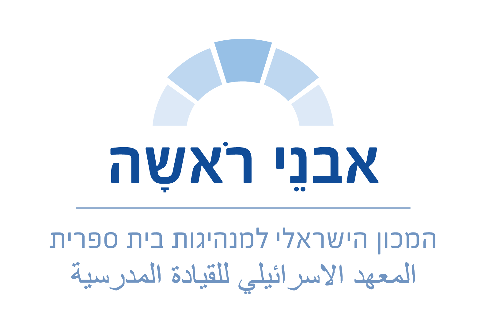
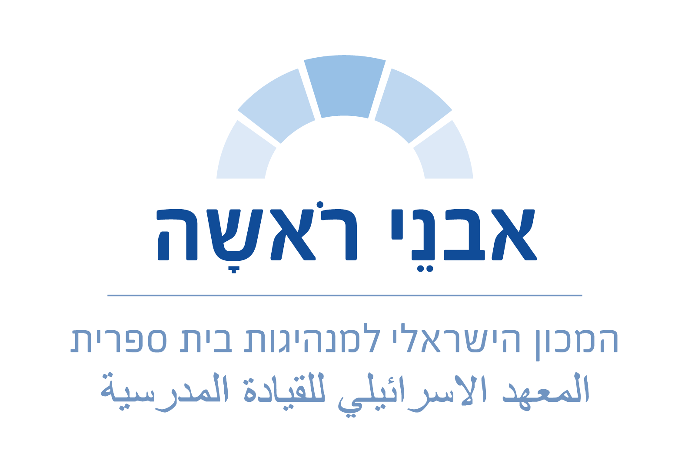
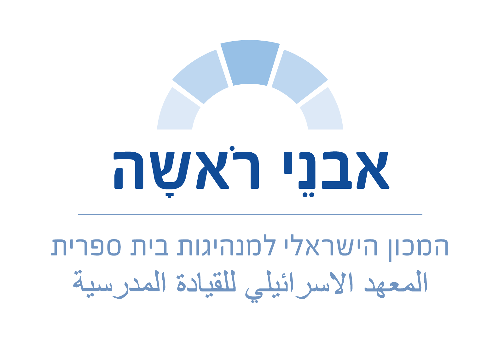
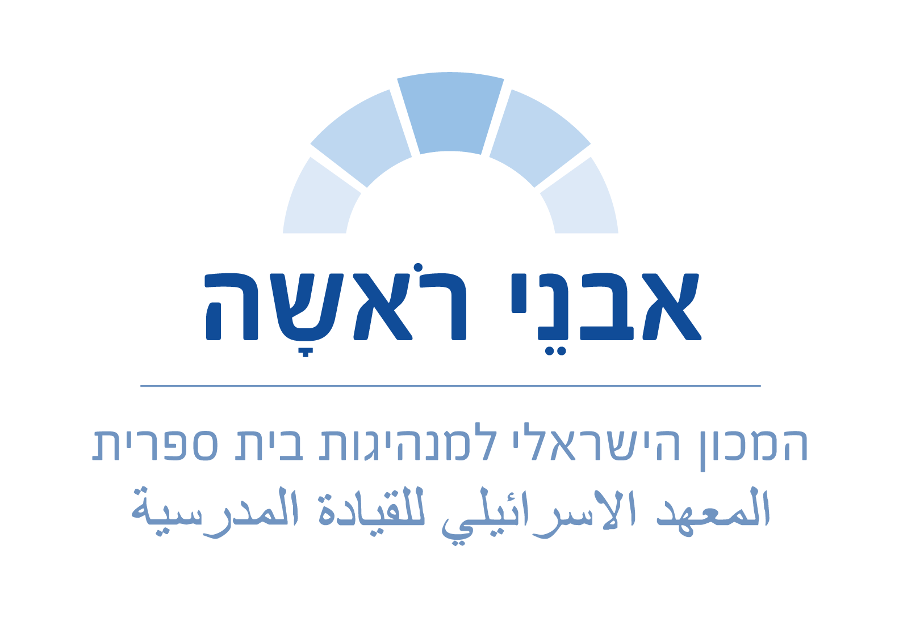

בואו לעוף איתנו
08.03.22 | ה' אדר ב' תשפ"ב | 17:30-13:30
היכרות עם השותפים למסע
14:00-13:30ניווט במציאות מורכבת
פתיחת הכנס והרצאה של ד"ר שי בן יוסף
מפשילים שרוולים
סדנאות לבחירה
הפסקה פעילה
16:00-15:45גמישות פדגוגית ניהולית
שיחה עם אייל רם, סמנכ"ל ומנהל מִנהל עובדי הוראה
ג'ז כתפיסה מנהיגותית
ד"ר רז יצחקי
משוב ופרידה
17:30